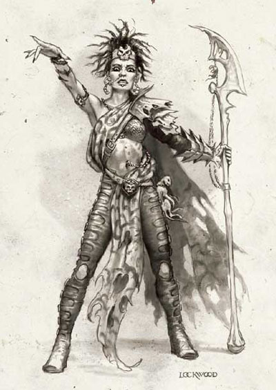

有不少牧师、德鲁依或圣武士虔诚且狂热的为信仰献身，让自己成为其神祇与信徒中间的桥梁。他们解释神谕、在众多信徒中担当导师与向导的身分，同时再有需要时组织信徒共同抵御外侮。直到最后他们会超越自己凡体的限制成为其神祇在拖瑞尔世界中的具像代表。
只有神术施法者才能成为神力信徒。牧师与德鲁依是最适合成为神力信徒的职业，不过游侠与圣武士也能成为神力信徒。有些邪恶的神祇（比如暴政之神班恩Bane），也会为了奖励手下黑暗卫士的忠诚，而让他们成为神力信徒。
生命骰数：1d8
职业条件：
施法能力：至少能施展4级神术
技能：交涉Diplomacy 5级
宗教知识Religion Knowledge 8级
信仰：如果要成为某位神祇的神力信徒，则必须选择该神祇为自己的信仰
职业技能：
以体质为关键属性者：集中心神Concentration
以智力为关键属性者：手艺Craft、神秘知识Arcane Knowledge、宗教知识Religion Knowledge、自然知识Nature Knowledge、法术造诣Spellcraft、占卜Scry
以智慧为关键属性者：医疗Heal、专业Profession、野外求生Wildness Lore
以魅力为关键属性者：交涉Diplomacy
每级技能点数：2+智力调整值
职业特性：
擅长武器与防具Weapon & Armor Proficiency：
神力信徒不擅长任何武器和防具。（他只能用基础职业擅长的武器）
每日施法次数Spell per Day：
当神力信徒职业等级提升时，他的每日施法次数与他的施法者等级都会增加。他可以把神力信徒等级加到原本的施法职业的施法者等级中，但他并不会因此而得到原本职业的其他奖励（例如超渡不死生物的次数等）。
如果他在成为神力信徒前有多个施法职业等级，则他每次提升神术信徒等级时必须要决定把获得的施法者等级加到哪一个职业上。
新神域New Domain：
第1级时，神力信徒可以从其神祇的领域中再挑选一个新神域。
传心术Divine Emissary：
第1级开始，神力信徒可以和周围60呎内侍奉其神祇的异界生物outlsiders或是与其阵营相同者透过心灵感应沟通。
神之庇护Sacred Denfense：
在第2级时，神力信徒在他对抗神术与异界生物的法术型能力或超自然能力时，所有豁免值检定都得到+1奖励。这个能力在第4级时改为+2。
法术移转Imbue With Spell Ability[法术型能力]：
第3级时，神力信徒得到法术移转的法术型能力，其效果与第4级的同名法术一样（施法者可以把自身准备好的法术移转到受术者身上，让受术者可以施展该法术），而且神力信徒不须先施展第4级的同名法术，只须使用此能力便能移转法术（不过限制是此能力最高只能移转第2级神术）。
超脱凡体Transcendence：
到了第5级时，因为神力信徒长期的在异界生物协助下为神服务，而且神多次藉由她的身体显现神迹，因此她的本质转变成本地异界生物Native Outsider（注）。这意味着除了她会得到一些免疫能力与弱点。超脱凡体后的神力信徒可以用即时动作对自己施展防护邪恶／善良／守序／混乱（在第5级时从她信的神阵营中选择一种，选定后即不能改变）。
〔注－本地异界生物特性：指的是那些有各种异界生物血统的人型生物。该种生物有以下特性：
1，只对人类起作用的法术，如魅惑人类charm person，不会对本地异界生物起作用。
2，对异界生物有效的法术或类似效果对本地异界生物种族同样有效，比如重击钉头槌mace of smiting或者异界之剑sword of planes可以对本地异界生物种族造成更大影响。将异界生物逐回其所属异界的法术对本地异界生物种族无任何效果，但类似放逐banishment之类将异界生物驱离施法者所在异界的法术仍可对本地异界生物种族发挥作用。
3，由于长期在扥瑞尔世界生活，本地异界生物种族与他们祖先所属异界的关系已经很泹薄，因此他们死亡时可以用复活术一类的法术复活，而无需使用许愿wish或者奇迹miracle。〕
当神力信徒经历了超脱凡体的转变后，她的外表会根据他所信仰的神与神的阵营而发生各种不同的变化。举例来说，洛山达的神力信徒经历了超脱凡体的转变后瞳孔可能会转变成金色，而任何与此神力信徒拥有相同信仰的人（包括侍奉该神的异界生物）会立刻认出超脱凡体的神力信徒，此时她所有以魅力为关键属性的技能都将获得+2的奖励。
附表：神力信徒
等级 基本攻击加值 强韧／反射／意志加值 职业特性
1 +0 +2／+0／+2 新神域、传心术
2 +1 +3／+0／+3 神之庇护+1
3 +2 +3／+1／+3 法术移转
4 +3 +4／+1／+4 神之庇护+2
5 +3 +4／+1／+4 超脱凡体